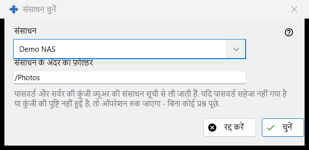
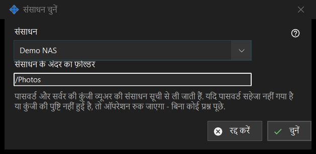

संसाधन चुनें
यह किस लिए है
व्यूअर की संसाधन सूची से कोई संसाधन शेड्यूल किए गए ऑपरेशन के स्रोत या गंतव्य के रूप में चुनती है। यह शेड्यूल किए गए ऑपरेशन की विंडो में स्रोत या गंतव्य के पास संसाधन.. से खुलती है।


इस क्रम में
- संसाधन सूची में संसाधन चुनें।
- संसाधन के अंदर का फ़ोल्डर जाँचें या बदलें; यह संसाधन के रूट फ़ोल्डर से शुरू होता है।
- चुनें दबाएँ। रद्द करें पिछली जगह बनाए रखता है।
तत्व
संसाधन सूची
व्यूअर की सूची में से केवल SFTP सर्वर और नेटवर्क फ़ोल्डर दिए जाते हैं, नाम के क्रम में; दूसरे प्रकार के संसाधन नहीं दिखते। कोई न हो तो विंडो कहती है: संसाधन सूची में कोई उपयुक्त संसाधन नहीं है. व्यूअर में SFTP सर्वर या नेटवर्क फ़ोल्डर जोड़ें. और चुनें अक्षम रहता है। संसाधन जोड़ना या उस पर फिर से भरोसा करना व्यूअर में होता है; यह विंडो कोई कनेक्शन नहीं बनाती।
संसाधन के अंदर का फ़ोल्डर
फ़ोल्डर चुने गए संसाधन के रूट के भीतर होना चाहिए, वरना ऑपरेशन विंडो में सहेजें उसे अस्वीकार कर देता है। दूसरा संसाधन चुनने पर बॉक्स उस संसाधन के रूट से फिर भर जाता है।
बिना प्रश्नों के रन
पासवर्ड और सर्वर की कुंजी व्यूअर की संसाधन सूची से आती हैं। रन कुछ नहीं पूछता: यदि पासवर्ड सहेजा नहीं गया है या सर्वर की कुंजी की पुष्टि नहीं हुई है, तो ऑपरेशन रुक जाता है और इतिहास कारण बताता है। केवल पढ़ने योग्य संसाधन स्थानांतरित करने या हटाने का लक्ष्य नहीं हो सकता, जिस संसाधन का रूट PIN से सुरक्षित है उसे अस्वीकार किया जाता है, और आर्काइव केवल सामान्य फ़ोल्डर लेता है।
प्रबंधक सेटिंग · SFTP साझाकरण सेटिंग · एक्सचेंज सर्वर सेटिंग